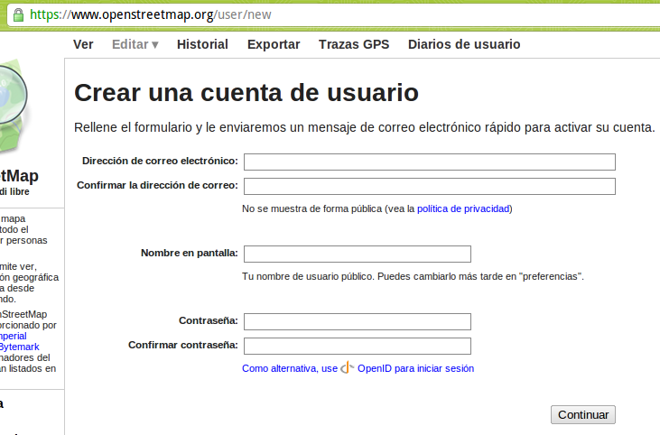
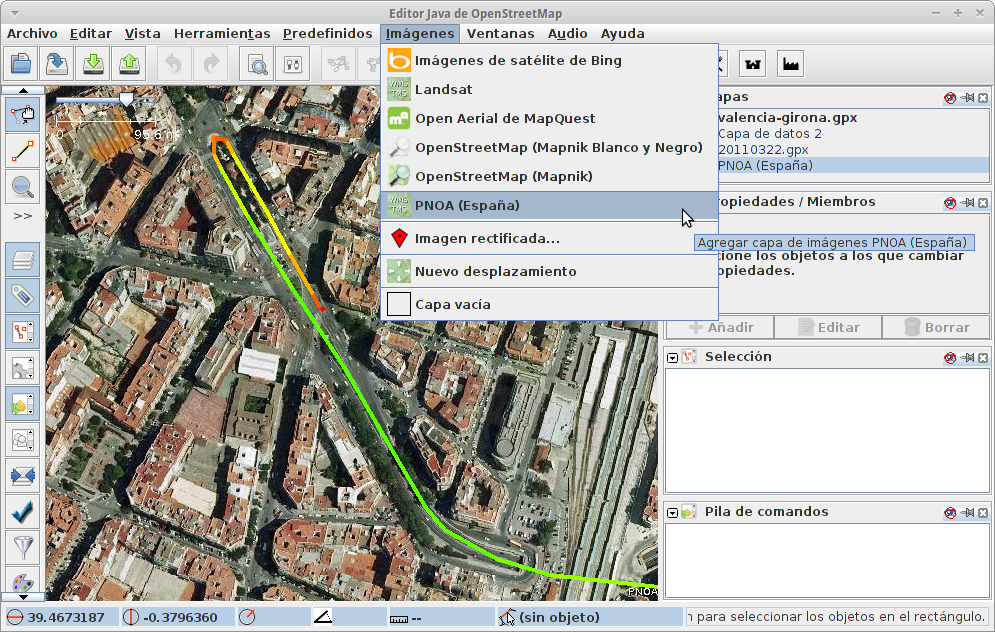

Agenda
- Flujo de trabajo básico en OSM
- Tipos de datos
- Llamadas a la API (XAPI)
-
JOSM
- Preparar la sesión de edición
- Comandos más empleados en JOSM
- Filtros
- Etiquetado y predefinidos
Flujo de trabajo
Recolectar
- Tomando datos directamente
- GPS + libreta/cámara/grabadora/...
- Walking Papers
- Mapping Parties!!
- Digitalizando sobre imágenes
- Bing, Yahoo, PNOA, Landsat, ...
- ...

Tomando datos con GPS

Walking Paper


¡¡Lo primero que hay que hacer
es darse de alta!!

Editores de datos OSM
-
JOSM
- escritorio, Java
- mucha funcionalidad, plugins, etc
- Potlach 2
- directamente en la web de OSM
- bueno para corregir etiquetas y ediciones sencillas
- ... hay muchos más


¿Qué pasa con los datos una vez se suben y se actualiza la base de datos?
Varios renderizadores actualizan los datos:
-
osmarender:
- usa reglas XSLT para generar SVG que se convierten a PNG
- era el render oficial, ahora ya retirado
-
Mapnik
- conecta con PostGIS
- el render principal en OSM
- genera teselas en varios estilos oficiales


Flujo de trabajo
- Recolectar
- Editar
- Renderizar
El modelo de datos
Nada que ver con el modelo tradicional de features
Modelo de datos
- Primitivas gráficas
- Nodos
- Vías (si se cierran pueden ser un área)
- Atributos alfanuméricos
- Relaciones
- Etiquetas
Nodos
- Atributos importantes
- identificador, latitud y longitud (EPSG:4326), usuario que creó el nodo, versión y changeset
- Contenido
- etiquetas
<node id="25496583" lat="51.5173639" lon="-0.140043"
version="1" changeset="203496" user="80n" uid="1238"
visible="true" timestamp="2007-01-28T11:40:26Z">
<tag k="highway" v="traffic_signals"/>
</node>
Vías
- Atributos igual que los nodos
- Contenido
- Nodos de la vía y etiquetas
<way id="5090250" visible="true" timestamp="2009-01-19T19:07:25Z"
version="8" changeset="816806" user="Blumpsy" uid="64226">
<nd ref="822403"/><nd ref="21533912"/>
<nd ref="21533910"/><nd ref="333725776"/><nd ref="823771"/>
<tag k="highway" v="unclassified"/>
<tag k="name" v="Clipstone Street"/>
<tag k="oneway" v="yes"/>
</way>
Relaciones
- Atributos
- id, visible, usuario y timestamp
- Contenido
- Miembros: id, tipo y rol en la relación
- Etiquetas
<relation id="77" visible="true"
timestamp="2006-03-14T10:07:23+00:00" user="fred">
<member type="way" id="343" role="from" />
<member type="node" id="911" role="via" />
<member type="way" id="227" role="to" />
<tag k="type" v="restriction"/>
<tag k="type" v="no_left_turn"/>
</relation>
Etiquetas
- Dan semántica a las primitivas gráficas
y relaciones - Definidas por la comunidad en el wiki
La API de OSM
- Único medio de modificar datos
- v0.6 desde 2009
- RESTful
- Consultas anónimas, actualizaciones por OAuth
- Soporte de versionado
- Descargas limitadas
a cuadrados de 15'
http://api.openstreetmap.org/api/capabilities
<osm version="0.6" generator="OpenStreetMap server">
<api>
<version minimum="0.6" maximum="0.6"/>
<area maximum="0.25"/>
<tracepoints per_page="5000"/>
<waynodes maximum="2000"/>
<changesets maximum_elements="50000"/>
<timeout seconds="300"/>
</api>
</osm>
http://api.openstreetmap.org/api/0.6/node/933346497
<osm version="0.6" generator="OpenStreetMap server">
<node id="933346497" lat="41.5827283" lon="2.013415"
version="3" changeset="8211372" user="Jaume Figueras"
uid="55987" visible="true" timestamp="2011-05-21T22:26:13Z">
<tag k="ref" v="FIXME"/>
<tag k="network" v="Xarxa d'autobusos Urbans de Terrassa"/>
<tag k="covered" v="no"/>
<tag k="tactile_paving" v="yes"/>
<tag k="bench" v="yes"/>
<tag k="public_transport" v="platform"/>
<tag k="highway" v="bus_stop"/>
<tag k="uic_ref" v="FIXME"/>
<tag k="uic_name" v="FIXME"/>
<tag k="name" v="Arenys de Mar"/>
<tag k="shelter" v="yes"/>
<tag k="operator" v="TMESA"/>
<tag k="layer" v="0"/>
</node>
</osm>
http://api.openstreetmap.org/api/0.6/node/933346497/history
<osm version="0.6" generator="OpenStreetMap server">
<node id="933346497" lat="41.5827339" lon="2.0134288" changeset="5928981"
user="Jaume Figueras" uid="55987" visible="true" timestamp="2010-10-01T15:46:00Z" version="1">
<tag k="highway" v="bus_stop"/>
<tag k="shelter" v="yes"/>
<tag k="name" v="Arenys de Mar"/>
<tag k="tactile_paving" v="yes"/>
<tag k="bench" v="yes"/>
</node>
<node id="933346497" lat="41.5827339" lon="2.0134288" changeset="8167041"
user="Jaume Figueras" uid="55987" visible="true" timestamp="2011-05-16T21:38:38Z" version="2">
<tag k="highway" v="bus_stop"/>
<tag k="shelter" v="yes"/>
<tag k="network" v="Xarxa d'autobusos Urbans de Terrassa"/>
<tag k="name" v="Arenys de Mar"/>
<tag k="ref" v="FIXME"/>
<tag k="uic_name" v="FIXME"/>
<tag k="tactile_paving" v="yes"/>
<tag k="layer" v="0"/>
<tag k="covered" v="no"/>
<tag k="public_transport" v="platform"/>
<tag k="uic_ref" v="FIXME"/>
<tag k="bench" v="yes"/>
<tag k="operator" v="TMESA"/>
</node>
<node id="933346497" lat="41.5827283" lon="2.013415" changeset="8211372"
user="Jaume Figueras" uid="55987" visible="true" timestamp="2011-05-21T22:26:13Z" version="3">
<tag k="highway" v="bus_stop"/>
<tag k="shelter" v="yes"/>
<tag k="network" v="Xarxa d'autobusos Urbans de Terrassa"/>
<tag k="name" v="Arenys de Mar"/>
<tag k="ref" v="FIXME"/>
<tag k="uic_name" v="FIXME"/>
<tag k="tactile_paving" v="yes"/>
<tag k="layer" v="0"/>
<tag k="covered" v="no"/>
<tag k="public_transport" v="platform"/>
<tag k="uic_ref" v="FIXME"/>
<tag k="bench" v="yes"/>
<tag k="operator" v="TMESA"/>
</node>
</osm>
http://api.openstreetmap.org/api/0.6/changeset/8211372
<osm version="0.6" generator="OpenStreetMap server">
<changeset id="8211372" user="Jaume Figueras"
uid="55987" created_at="2011-05-21T22:26:04Z"
closed_at="2011-05-21T22:26:17Z" open="false"
min_lat="41.5617613" min_lon="2.0082875"
max_lat="41.5859881" max_lon="2.0241229">
<tag k="comment" v="Bus de Terrassa - Línia 7 adaptada al nou esquema i arranjaments varis"/>
<tag k="created_by" v="JOSM/1.5 (4064 en)"/>
</changeset>
</osm>
http://api.openstreetmap.org/api/0.6/map?bbox=2.0082875,41.5617613,2.0241229,41.5859881
<?xml version="1.0" encoding="UTF-8"?>
<osm version="0.6" generator="CGImap 0.0.2">
<bounds minlat="41.5617613" minlon="2.0082875"
maxlat="41.5859881" maxlon="2.0241229"/>
<node id="282873786" lat="41.5803041" lon="2.0268698"
user="Jaume Figueras" uid="55987" visible="true"
version="5" changeset="1576508" timestamp="2009-06-20T17:59:37Z">
<tag k="highway" v="traffic_signals"/>
</node>
<node id="282873797" lat="41.5805069" lon="2.0266905"
user="Jaume Figueras" uid="55987" visible="true"
version="6" changeset="5858775" timestamp="2010-09-23T23:30:09Z">
<tag k="highway" v="traffic_signals"/>
</node>
....
Son 1.6MB de descarga
Java OpenStreetMap
Editor

- http://josm.openstreetmap.de/
- Potente editor OSM
- Carga datos GPX
- Carga imágenes (TMS/WMS)
- Extensible mediante plugins
- Altamente especializado
- Fácil instalación vía Java Web Start
Descargar datos

Cargar GPX

Imagen de fondo
Comandos más usados


Subir los cambios

¿No te dan ganas de entrar a editar? ¡ánimo!

¡¡Y apúntante a la lista de correo!!
http://lists.openstreetmap.org/listinfo/talk-es

Gracias!!